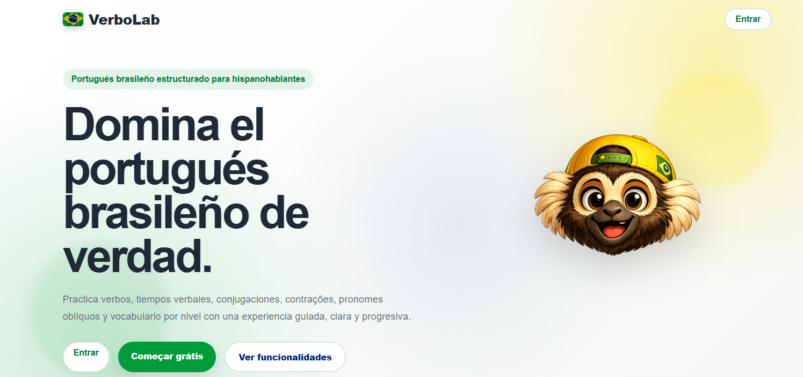

Proyecto destacado
Producto fullstack en desarrollo
VerboLab · Plataforma para practicar portugués brasileño
- Problema: muchas personas hispanohablantes estudian portugués, pero se les dificulta dominar verbos, conjugaciones y estructuras reales de uso.
- Solución: diseño y desarrollo de una app de práctica guiada enfocada en verbos, tiempos verbales, pronombres, contracciones y vocabulario por nivel.
- Valor de producto: convierte contenido gramatical complejo en ejercicios claros, progresivos y pensados para mejorar fluidez real.
- Valor técnico: proyecto estructurado como producto web fullstack, con frontend, backend, base de datos, despliegue y documentación profesional.